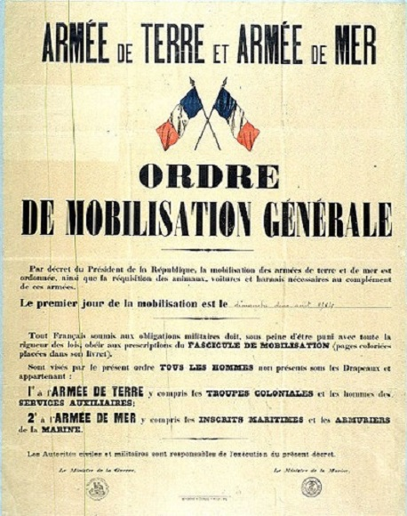
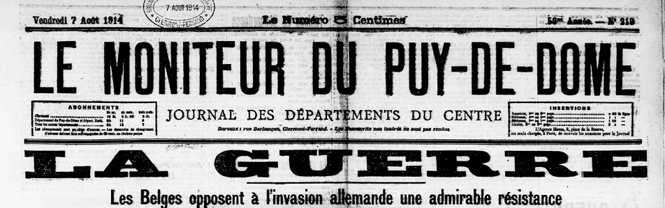
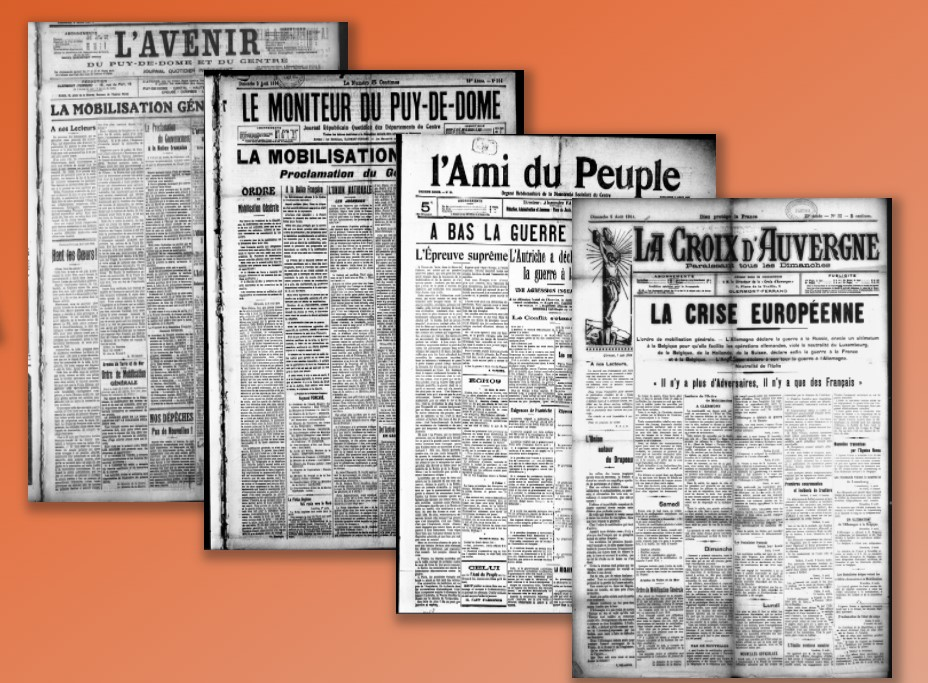
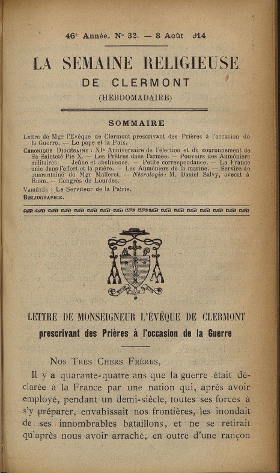
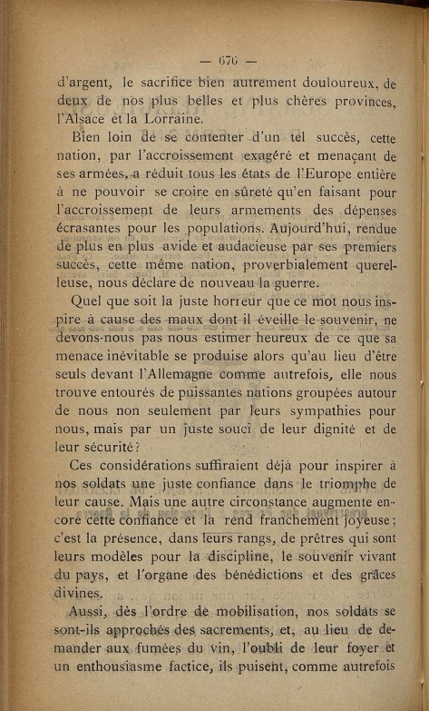
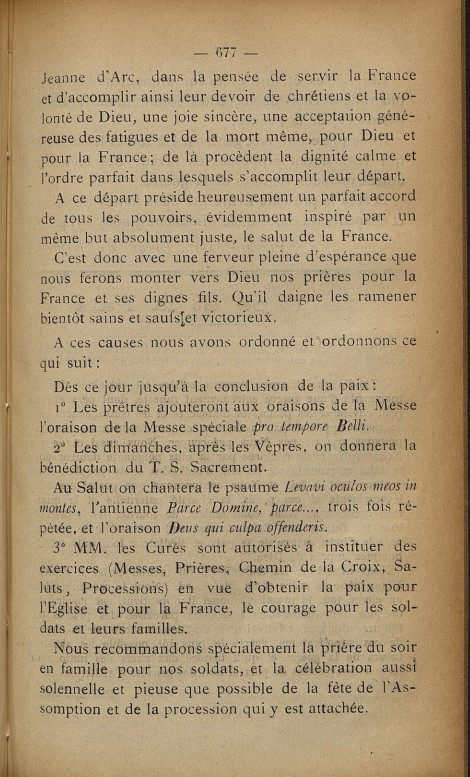
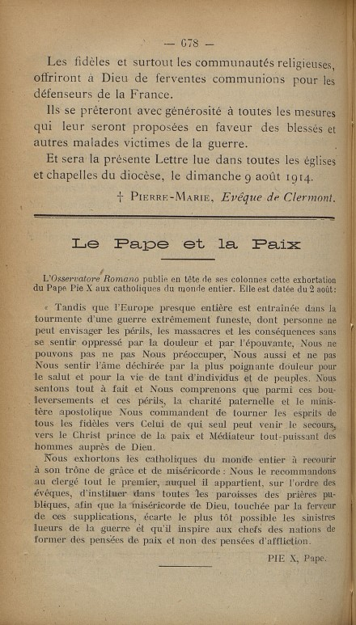
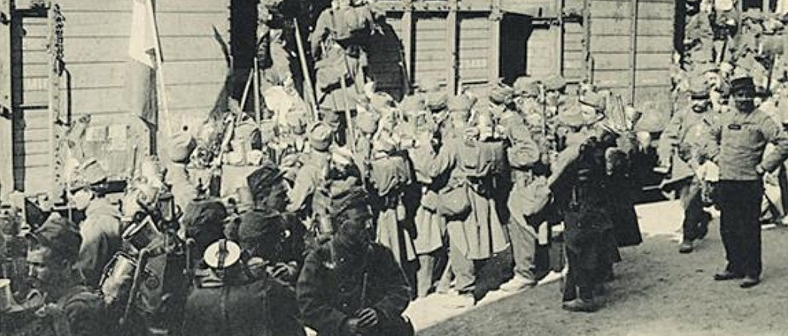
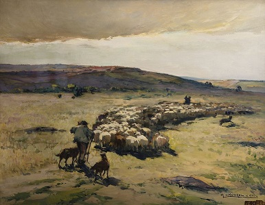
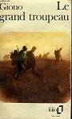

La Mobilisation
Bien que la situation en Europe soit extrèmement tendue depuis l’assassinat de l'archiduc François-Ferdinand, héritier de l'Empire austro-hongrois, à Sarajevo le 28 Juin 1914, personne ne se doute vraiment que toute l’Europe sera en guerre au début du mois d’Août. Certainement pas aux Raynauds, la priorité du moment est la moisson et on garde surtout un œil sur le temps pour s’assurer que l’on rentre le grain et la paille avant qu’il ne pleuve.
C’est donc un choc dans les campagnes quand le tocsin sonne l’annonce de la guerre et qu’en Mairie est affichée la Declaration de Mobilisation. Plus de permissions agricoles pour Antoine et Auguste déjà en garnison à Epinal, et un départ immédiat pour Gabriel laissant les sœurs et les parents s’occuper seuls des moissons. Plus que la perspective de la guerre, c’est sans doute cet abandon de la terre et de leur métier de paysan qui est le plus dur à vivre pour les trois frères. Le foin bien au sec dans la grange, une bonne récolte de grain, des champs et des haies bien entretenus, des bêtes vigoureuses et en bonne santé, c’est là toute leur fierté et raison d’être. Le paysan sait fort bien que sans lui la terre devient friche … les vieux et les femmes pourront-ils faire sans eux ? …


Compte tenu de l’ampleur de la mobilisation, les autorités sont immédiatement conscientes que les femmes auront un rôle crucial à jouer afin que l’économie ne s’arrête pas brutalement. Au fond, c’est l’ensemble de la population qui est mobilisée pour l’effort de guerre.
L’appel aux femmes est lancée dès le 6 Août par le Président du Conseil, René Viviani, également député de la Creuse.
Sans doute est-il particulièrement sensible à la situation dans les campagnes et les Combrailles …
La presse régionale, de tous les bords, est unanime : la cause est juste et chacun (clérical ou socialiste) met ses différences de côté pour le salut de la France. L’agresseur est l’Allemagne et le pays n’a d’autre choix que de se défendre. Difficile de savoir quel journal est lu par la famille, mais c’est sans doute Le Moniteur du Puy De Dôme ou la Croix d’Auvergne qui ont leurs faveurs.

Editions du 2 et 7 Août

En Combrailles, nous sommes en terre catholique et l’Eglise est toujours présente dans le quotidien des paysans, ses rites rythment leurs vies avec leurs joies et leurs peines. Tous les frères et sœurs sont d’ailleurs allés à l’école des frères ou des sœurs. A la Crouzille, Monsieur le curé est sans doute une figure bien plus importante que l’instituteur.
On écoute et respecte les paroles du curé et on peut s’imaginer celui-ci lire à ses fidèles la lettre de l’évêque de Clermont Ferrand en ce dimanche de 9 Août 1914 – lettre publiée dans la Semaine Religieuse de début Août.




Considérons un instant le peu d’informations critiques dont dispose la population à l’époque. Evidemment pas d’internet, pas de télévision, pas de radio et une censure qui contrôle très vite les rédactions des journaux. Mais par-dessus tout, une éducation rigoureuse qui vous apprend à compter, à lire et à écrire en belles cursives et qui s’achève au certificat d’études. Une éducation solide et moraliste où les devoirs l’emportent sur les droits mais sans doute pas une éducation qui développe le sens critique des ses élèves … pour s’en convaincre, il n’y a qu’à lire les livres d’écoles d’Augustine et Maria.
Alors quand la guerre arrive, on ne songe pas un instant à ne pas y aller. D’ailleurs tout le monde pense qu’elle sera courte et personne n’a encore compris combien elle sera meurtrière. Au fond, c’est tout simple, on fait juste son devoir et on le fait avec la bénédiction de l’Eglise …
C’est près de 3,7 millions d’hommes que la France mobilise. Les 880 000 hommes de l'active, soit les classes 1911, 1912 et 1913 (nés entre 1891 et 1893, 21 à 23 ans) sont déjà dans les dépôts et casernes. Ils sont rejoints par les 2,2 millions d’hommes de la réserve, soit les classes 1900 à 1910 (nés entre 1880 et 1890, 24 à 34 ans) ; puis par les 700 000 hommes de la territoriale, soit les classes 1893 à 1899 (nés entre 1873 et 1879, 35 à 41 ans) ; la réserve de la territoriale, soit les classes 1887 à 1892, n'est pas immédiatement mobilisée (elle sera incorporée pour les plus jeunes à partir du 16 août).
D’après le recensement de l’année 1911, la commune de la Crouzille compte 829 habitants à cette époque, auxquels il convient d’ajouter environ 27 hommes sous les drapeaux cette année-là. Au total, ce sont 163 hommes qui sont mobilisés le 1er Aout 1914, une véritable saignée !
Le Départ des poilus, août 1914 - Peinture de A Hetler, 1926 - Gare de l'Est - Paris.
La réalité du départ pour la majorité des soldats ... et sans doute pour nos paysans

Dans Le Grand Troupeau, Jean Giono est sans doute l’auteur qui a le mieux décrit la déchirure que la guerre a représenté pour nos campagnes. L’ouvrage est d’une grande pudeur et empreint d’une forte sensibilité, décrivant les souffrances de ceux partis au front et les tourments de ceux et celles restés au pays. Les mots sont simples mais pesés. Le constant va et vient entre la vie au front et la vie au village nous donne un éclairage unique du quotidien des familles.
Les premières pages du livre sont particulièrement puissantes avec l’image du grand troupeau de brebis que les quelques vieux bergers restés au pays descendent des montages à marche forcée. Soudain la souffrance inutile des bêtes devient la souffrance inutile des hommes partant au combat …
La nuit d’avant, on avait vu le grand départ de tous les hommes. C’était une épaisse nuit d’août qui sentait le blé et la sueur de cheval. Les attelages étaient là dans la cour de la gare. Les gros traîneurs de charrues on les avaient attachés dans les brancards des charrettes et ils retenaient à plein reins des chargements de femmes et d’enfants.
Le train doucement s’en alla dans la nuit : il cracha de la braise dans les saules, il prit sa vitesse. Alors les chevaux se mirent à gémir tous ensemble …
… Ils levèrent les yeux au ciel, tous les trois ensemble, parce qu’une ombre venait comme d’effacer le jour : au-dessus des toits un large étendard de poussière passait devant le soleil.

Et alors ils entendirent le bruit.
Cela faisait comme une belle eau qui coule, une eau épaisse lâchée hors de son lit et elle semblait sonner dans tous les ressauts de la terre et du ciel à gros bourdons de cloches.
Ça avançait, les cloches et le bruit d’eau et, par instants, la poussière passait là-haut en paquets de nuages et le jour de la rue devenait roux muscat, roux comme du jus de raisin et enfin arriva, déployé dans la fumée du ciel, un vol de gémissements et de plaintes, comme le gémissement des chevaux la nuit d’avant …
… « Burle, qu’est-ce que tu en dis ? appela Malan.
_ Des moutons », dit Burle. Il parlait rare, en écrasant son mal de poitrine entre ses vieilles dents. « Des moutons, mais jamais de ma vie un tel bruit … »
Mais maintenant, tout l’air tremblait et on ne pouvait plus parler.
Alors on vit arriver un vieil homme et, derrière lui, la tête d’un troupeau.
« Sainte Vierge ! dit la laitière.
_ Il est fou celui-là !» cria Burle.
Il y avait le gros soleil et la poussière, et l’épaisse chaleur sur les routes si difficile à trouer d’un pas d’homme ou de bête ; ce soleil comme une mort !...
Le cordonnier dit dans sa barbe :
« La guerre ! C’est cette guerre qui les fait descendre. »
Du coup, autour de lui, on ferma la bouche, et Burle même comprit là-haut et les autres comprirent, tout seuls.
Les cœurs se mirent à taper des coups sourds un peu plus vite. On pensait à cette nuit d’avant qui sentait trop le blé. Oui, trop le blé ! Et quelle vague de dégoût à sentir cette odeur de blé, à voir les petits enfants dans les bras des femmes, à voir ces jeunes femmes, toujours bien pleines de plaisir, sur leurs deux jambes ; à comprendre tout ça, en même temps que les beaux hommes partaient dans le gémissement des chevaux.
... La bouchère met le couvert ; elle lance les assiettes au hasard sur la table ; elle a aux lèvres sa moue de petite fille, et de temps en temps, elle renifle.
Le petit garçon monte sur sa chaise.
« Tire-toi par ici », dit la bouchère.
Elle avait déjà essayé de cacher la place vide avec le pot à eau et la bouteille.
« Tire-toi, et puis, non ! laisse la place ; puis non, va, tire-toi, fais comme tu veux. »
Elle s’en va à l’évier prendre des verres et elle y reste, le visage tourné vers le mur, un bon moment, immobile …
« Mangez, mère », dit Rose.
Mais la mère fait « Non » avec la tête et elle dit : « Qui sait où ils sont maintenant ? ».
Dehors, le grand troupeau coule.
« Ils ne doivent pas être bien loin, dit Rose. Il faut qu’on les habille, qu’on leur donne toutes leurs affaires, et le fusil, et les cartouches ; et puis, il faut qu’on les habitue encore à tirer du fusil, on n’est pas obligé de savoir qu’il sait.
_ Il n’a qu’à dire qu’il ne sait pas.
_ Oh mais oui, dit Rose, c’est pas facile, c’est tout écrit ici à la Mairie, et qu’il prend son permis de chasse et tout le reste. Il vaut mieux qu’il dise rien, qu’il dise comme les autres. Et puis, des pères de famille, on peut pas les jeter tout d’un seul coup ; on y mettra ceux qui sont pas mariés d’abord, puis ceux qui ont pas d’enfants, puis ceux qui n’ont pas de commerce ; nous, il est marié, il a un enfant, on a un commerce, alors …Et puis, d’ici là …Le pharmacien dit que, pour la Toussaint, au plus tard, au plus tard … A mon idée, avant, ça aura tourné d’une façon ou de l’autre … Mangez, mère !
_ Non, dit la mère, ça s’arrête à mon gosier. Que ça tourne comme ça voudra, mais que ça finisse !»

